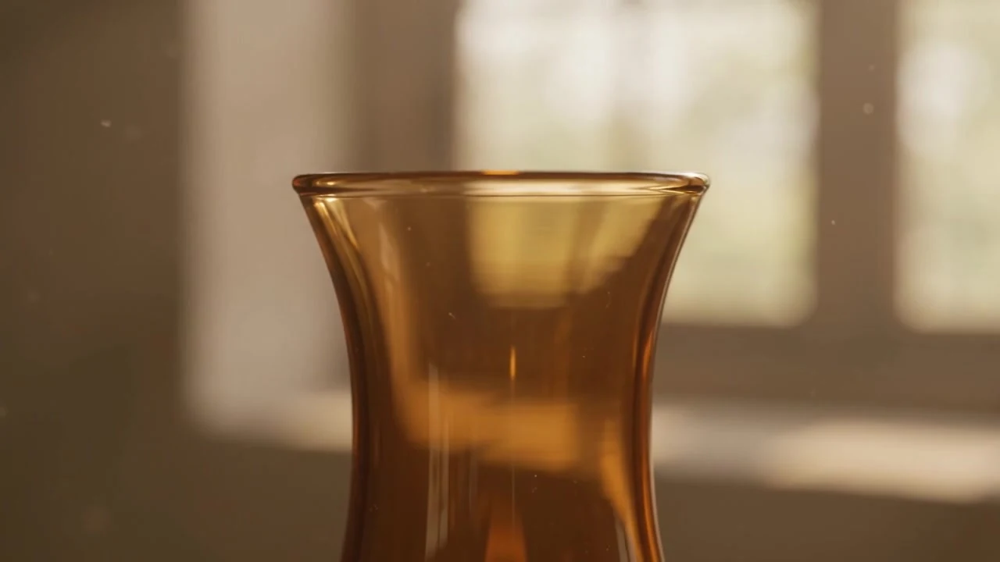
Amber Glass
Warm transparency. Light held in colour.
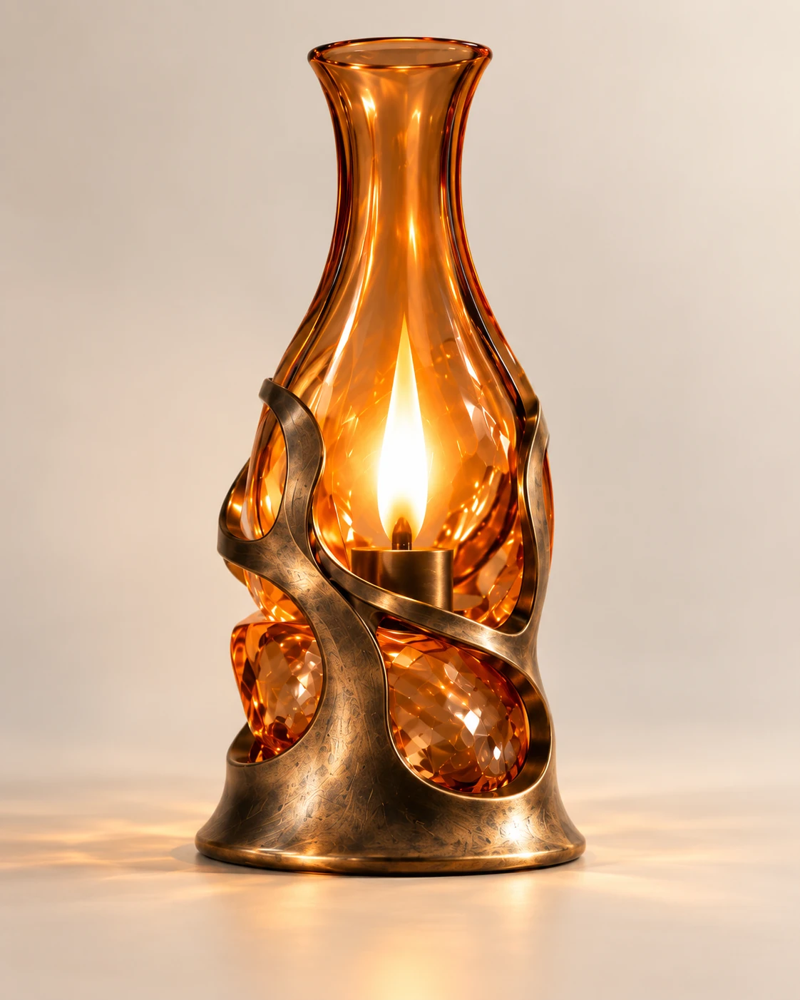
RELIC No.01
A New Form of the Flame.
Discover the object
RELIC / OBJECT 01
RELIC No.01 reinterprets the warmth and ritual of traditional flame-based lighting through amber glass, faceted crystal and a contemporary sculptural frame.
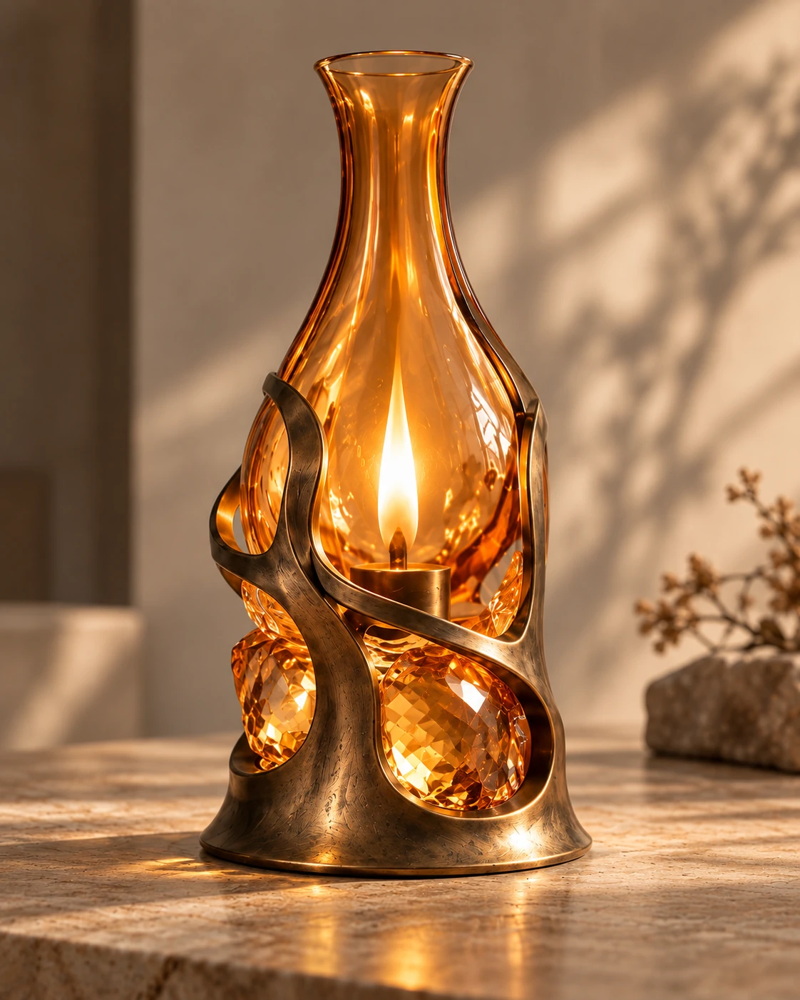
Collectible lighting object
Antique spirit without nostalgia. Sculptural form without ornament.
View the objectGlass, light, crystal and metal come together in a single sculptural composition.
From quiet domestic interiors to gallery settings, RELIC No.01 shifts between functional light and sculptural presence.
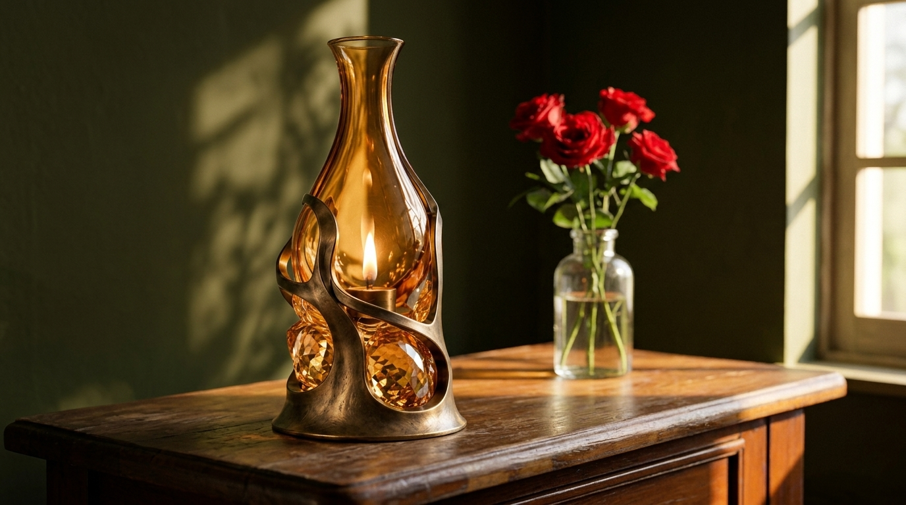
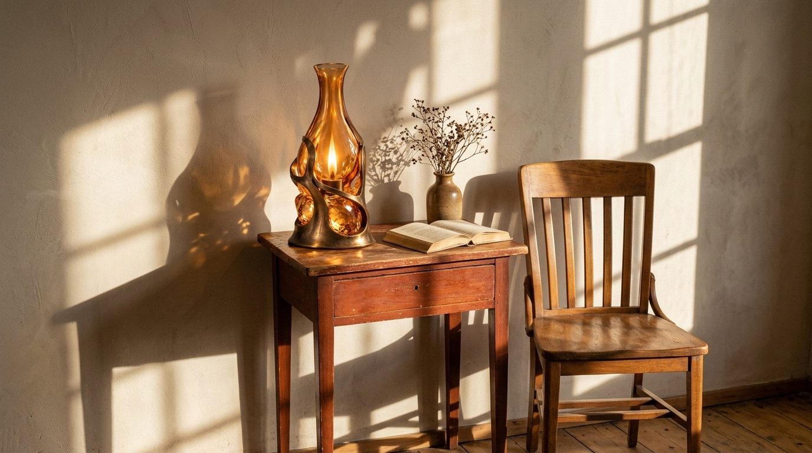
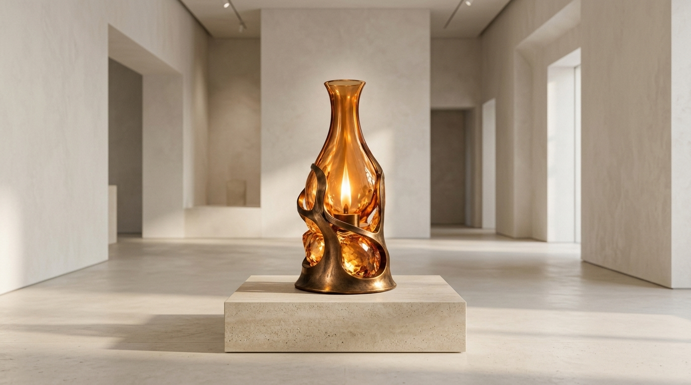
RELIC is defined by the tension between transparency, reflection and mass.

Warm transparency. Light held in colour.
Structure shaped as sculpture.
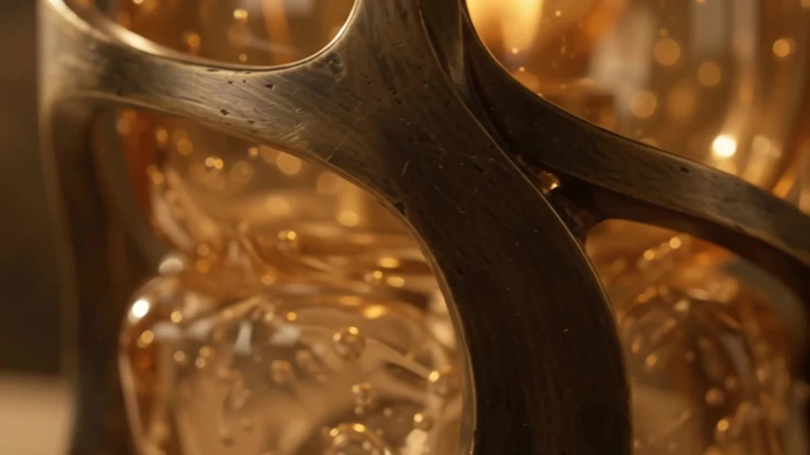
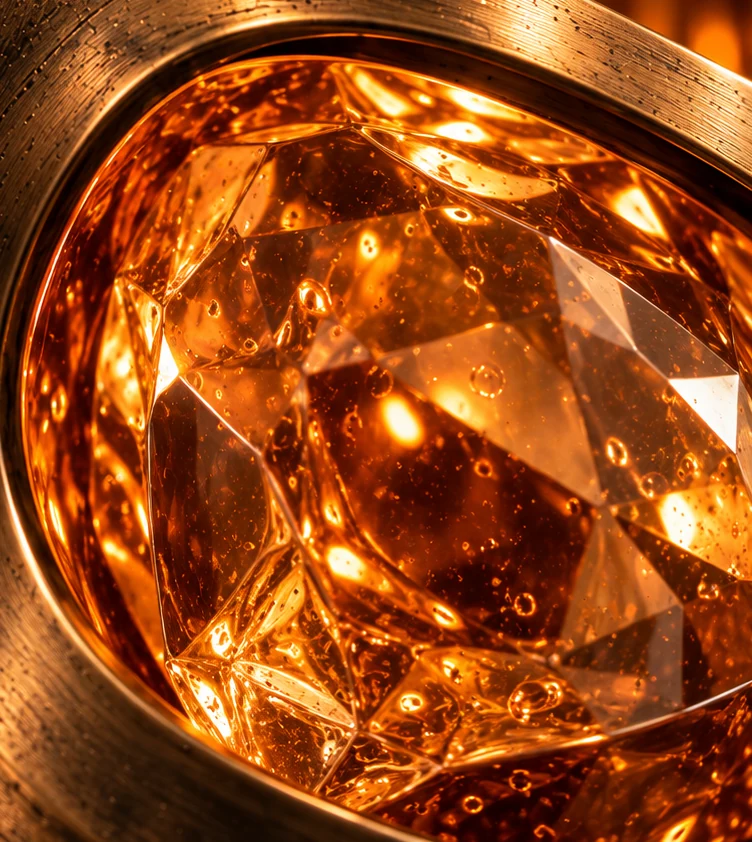
Light fractured through mass.
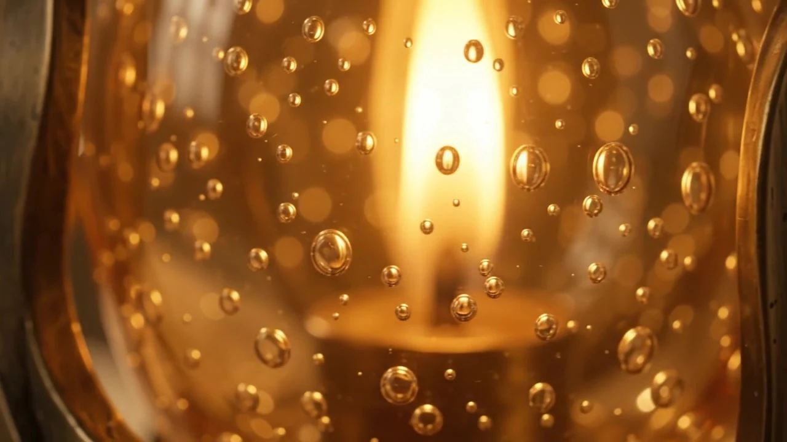
A quiet source of warmth.
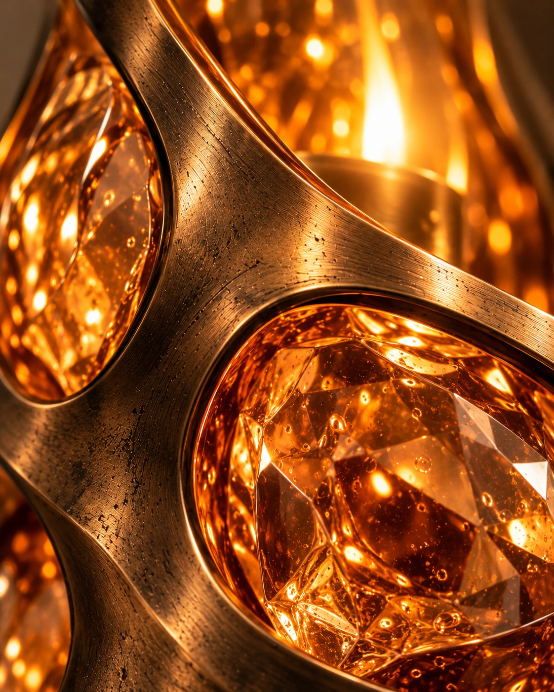
Bronze, crystal and amber glass are brought together through carefully controlled transitions.
LIGHT / 01
Light transforms the material relationships without changing the form.
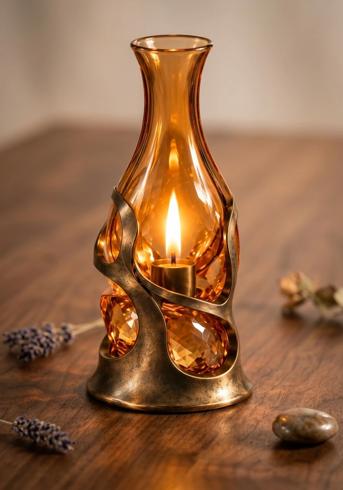
IN SPACE
RELIC occupies the room as both a functional light and a sculptural object.
A New Form of the Flame.
RELIC No.01 was shaped by two key visual references: the timeless silhouette of the traditional oil lamp and the sculptural relationship between crystal mass and enclosing metal structure. These influences were not copied directly, but translated into a contemporary design language. Through amber glass, faceted crystal and a flowing metal frame, the project reimagines the warmth and ritual of flame as a collectible lighting object.
Silhouette, proportion and component relationships developed before digital modelling.
The design evolves from the visual language of traditional oil lamps into a contemporary collectible object.
“Early studies explored proportion, enclosure and the relationship between glass and structure before the final RELIC No.01 composition was established.”
Early form exploration
A clay reference in Blender, working out glass, light, crystal and frame as separate parts.
Digital development
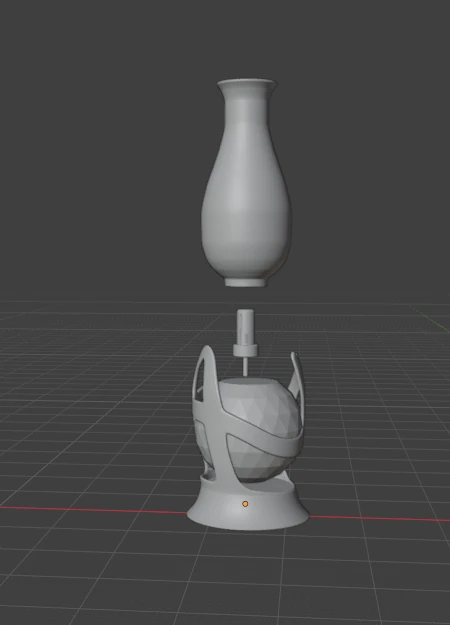
Amber glass, faceted crystal and a flowing bronze frame, held in one form.
Final RELIC No.01